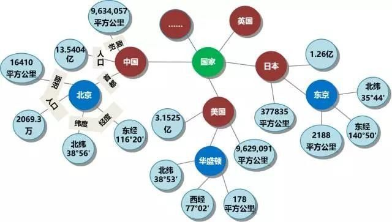
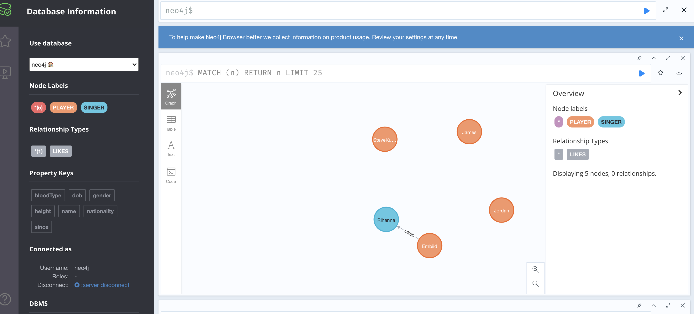
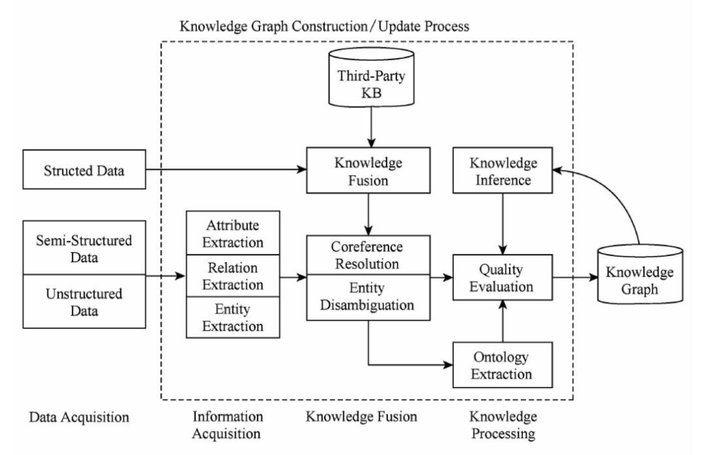
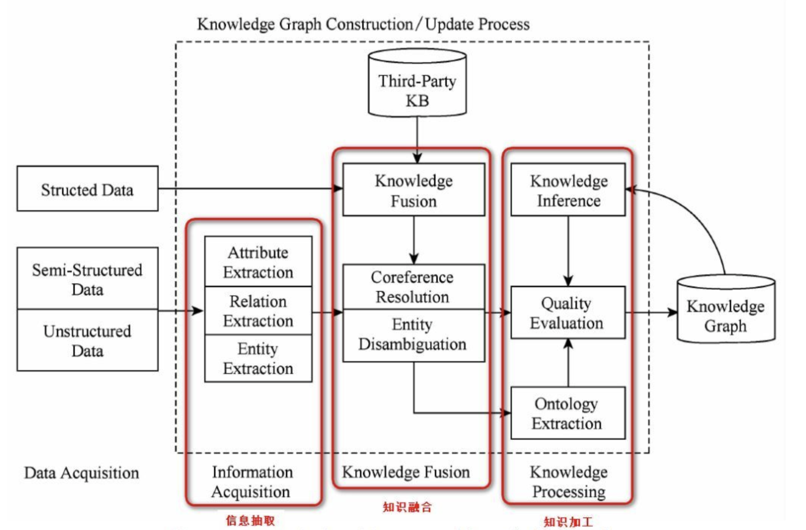
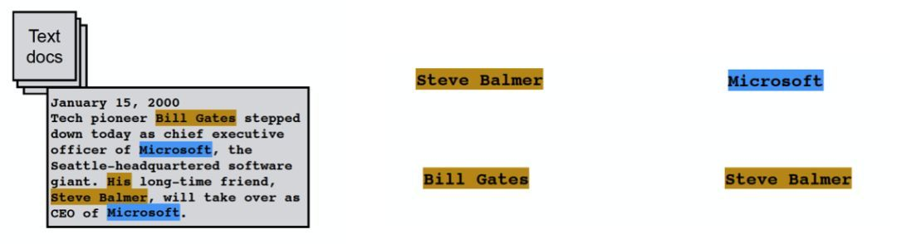
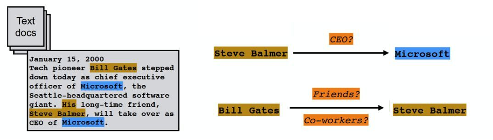
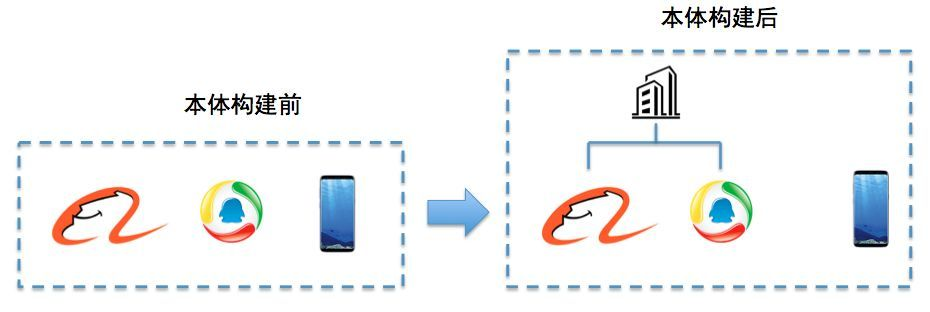
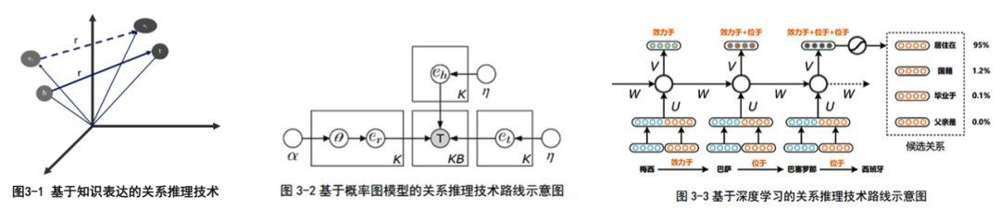

写在前面
从搜索引擎开始，到内容推荐、智能交互等众多领域，传统算法越来越难以满足用户需求的快速迭代。与人工智能相关技术的结合，上述领域的底层技术都与领域内知识图谱构建相关。
知识图谱的概念是谷歌在2012年提出，应用于智能搜索领域，并且逐渐在学术界和工业界普及。随着信息服务应用的智能化需求越来越高，知识图谱已经广泛应用于智能搜索、智能问答、个性化推荐、舆情分析、艺术创作等领域。通过将互联网上的信息、数据以及关系聚集为知识，借助知识图谱存储引擎，更易于计算、理解与评价，并且形成一套语义知识库。知识图谱以其强大的语义处理能力与开放互联能力，可为知识互联奠定知识的基础。
知识图谱定义
知识图谱，是结构化的语义知识库，用于迅速描述物理世界中的概念及相互关系。
知识图谱通过对错综复杂的文档数据进行有效加工、处理、整合，转化为简单、清晰的“实体，关系，实体”的三元组，最后聚合大量知识，从而实现知识的快速响应和推理。
知识图谱有自顶向下和自底向上两种构建方式。自顶向下构建是借助百科类网站等结构化数据源，从高质量数据中提取本体和模式信息，加入到知识库中；自底向上构建是借助技术手段，从公开采集的数据中提取出资源模式，选择其中置信度较高的新模式，经人工审核之后，加入到知识库中。

如上图所示，节点之间如果存在关系，会被一条无向边连接在一起，这个节点，我们称为 实体（Entity），他们之间的边，称为 关系（Relationship）。
知识图谱的基本单位，便是“实体（Entity）-关系（Relationship）-实体（Entity）”构成的三元组，这也是知识图谱的核心。
- 实体：是具有可区别性且独立存在的某种事物。实体是知识图谱中的最基本元素，不同的实体间存在不同的关系。如图中的“中国”、“北京”、“16410平方公里”等。
- 关系：关系是连接不同的实体，指代实体之间的联系。通过关系节点把知识图谱中的节点连接起来，形成一张大图。如途中的“人口”、“首都”、“面积”等。
数据类型和存储方式
知识图谱的原始数据类型一般来说有三类：
- 结构化数据（Structed Data）：比如关系数据库数据
- 半结构化数据（Semi-Structed Data）：XML、JSON、百科等
- 非结构化数据（UnStructed Data）：图片、音频、视频、文本
对于这三种数据类型的存储，可以有两种方法选择：
- 通过RDF（资源描述框架）这样的规范存储格式来进行存储
<RDF>
<Description about="http://www.w3school.com.cn/RDF">
<author>David</author>
<homepage>http://www.w3school.com.cn</homepage>
</Description>
</RDF>- 通过图数据库进行存储，如Neo4j等。

在知识图谱方面，图数据库比关系数据库灵活的多。在数据少的时候差别不大，但知识图谱复杂并且涉及到2、3层关联度查询时，图数据库的查询效率会比关系数据库的效率高出几千甚至几百万倍。
知识图谱的架构
架构可拆分为逻辑架构和技术架构。
逻辑架构
知识图谱在逻辑上可分为模式层与数据层两个层次。
- 模式层构建在数据层之上，是知识图谱的核心，通常采用本体库来管理知识图谱的模式层。本体是结构化知识库的概念模板，通过本体库而形成的知识库不仅层次结构较强，并且冗余程度较小。
模式层：实体-关系-实体，实体-属性-性值
- 数据层主要是由一系列的事实组成，而知识将以事实为单位进行存储。如果用（实体1，关系，实体2）、（实体、属性、属性值）这样的三元组来表达事实，可选择图数据库作为存储介质，例如开源的Neo4j、Twitter的FlockDB、sones的GraphDB等。
数据层：比尔盖茨-妻子-梅琳达·盖茨，比尔盖茨-总裁-微软
技术架构
知识图谱的整体架构如下图所示，其中虚线框内部分为知识图谱构建过程，同时也是知识图谱更新的过程。

- 虚拟框的最左边是三种输入数据结构，结构化数据、半结构化数据、非结构化数据。这些数据可以来自任何地方，只要它对要构建的这个知识图谱有帮助。
- 虚拟框里面的是整个知识图谱的构建过程。其中主要包含了3个阶段，信息抽取、知识融合、知识加工。
- 最右边是生成的知识图谱，而且这个技术架构是循环往复，迭代更新的过程。知识图谱不是一次性生成，是慢慢积累的过程。
- 信息抽取：从各种类型的数据源中提取出实体、属性以及实体间的相互关系，在此基础上形成本体化的知识表达；
- 知识融合：在获得新知识之后，需要对其进行整合，以消除矛盾和歧义，比如某些实体可能有多种表达，某个特定称谓也许对应于多个不同的实体等；
- 知识加工：对于经过融合的新知识，需要经过质量评估之后（部分需要人工参与甄别），才能将合格的部分加入到知识库中，以确保知识库的质量。

从上图看出，知识图谱的构建，本质就是信息抽取（抓取、分词、词性）、知识融合（理解语义）、知识加工（表征）三个过程或模块。
信息抽取
信息抽取（information extraction）是知识图谱构建的第一步，其中的关键问题是如何从异构数据源中自动抽取信息。信息抽取是自动化的从结构化和非结构化数据（音频/视频/图片）中抽取实体（entity）、关系（relationship）以及属性（attribute）等结构化信息的技术。
信息抽取涉及到的关键技术包括：实体抽取、关系抽取和属性抽取。
实体抽取（entity extraction）
实体抽取即命名实体识别（named entity recognition，NER），是指从文本数据集中自动识别出命名实体。实体抽取的质量（准确率和召回率）对知识获取效率和质量影响极大，因此是信息抽取中基础和关键部分。

2012年Ling等人归纳出12种实体类别，并基于条件随机场CRF进行实体边界识别，最后采用自适应感知机算法实现了对实体的自动分类，取得了不错的效果。
但是随着互联网内容的动态变化，采用人工预定义实体分类体系的方式难以适应需求，因此提出面向开放域的实体识别和分类研究。
在面向开放域的实体识别和分类研究中，不需要（也不可能）为每个领域或者每个实体类别建立单独的语料库作为训练集。因此，该领域面临的主要挑战是如何从给定的少量实体实例中自动发现具有区分力的模型。
一种思路是根据已知的实体实例进行特征建模，利用该模型处理海量数据集得到新的命名实体列表，然后针对新实体建模，迭代地生成实体标注语料库。
另一种思路是利用搜索引擎的服务器日志，事先并不给出实体分类等信息，而是基于实体的语义特征从搜索日志中识别出命名实体，然后采用聚类算法对识别出的实体进行聚类。
关系抽取（relation extraction）
文本语料经过实体抽取，得到的是一系列离散的命名实体，为了得到语义信息，还需要从相关的语料中提取实体之间的关联关系，通过关联关系将实体（概念）联系起来，才能够形成网状的知识结构，研究关系抽取技术的目的，就是解决如何从文本语料中抽取实体间的关系这一基本问题。

关系抽取涉及到的技术环节包括：
- 人工构造语法和语义规则（模式匹配）
- 统计机器学习方法
- 基于特征向量或核函数的有监督学习方法
- 研究重点转向半监督和无监督
- 开始研究面相开放域的信息抽取方法
- 将面向开放域的信息抽取方法和面向封闭领域的传统方法结合
属性抽取（attribute extraction）
属性抽取的目标是从不同信息源中采集特定实体的属性信息。例如针对某个公众人物，可以从网络公开信息中得到其昵称、生日、国籍、教育背景等信息。属性抽取技术能够从多种数据来源中汇集这些信息，实现对实体属性的完整提取。
- 将实体的属性视作实体与属性值之间的一种名词性关系，将属性抽取任务转化为关系抽取任务。
- 基于规则和启发式算法，抽取结构化数据
- 基于百科类网站的半结构化数据，通过自动抽取生成训练语料，用于训练实体属性标注模型，然后将其应用于非结构化数据的实体属性抽取。
- 采用数据挖掘的方法直接从文本中挖掘实体属性和属性值之间的关系模式，据此实现对属性名和属性值在文本中的定位。
知识融合
通过信息抽取，从原始非结构化和半结构化数据中获取到了实体、关系、以及实体的属性信息。
这些实体和关系以及属性是信息碎片，知识融合的本质就是用正确的语义理解将碎片拼接（连接）起来，形成完整拼图。
经过信息抽取，大量碎片是平行化存储的，缺乏层次和逻辑；同时还存在大量冗余和错误的碎片（信息）。
知识融合就是为了解决这些问题，涉及到两部分技术框架：实体连接、知识合并。
实体连接
实体连接（entity linking）：是指对于从文本中抽取得到的实体对象，将其链接到知识库中对应正确实体对象的操作。
基本思想是首先根据给定的实体项，从知识库中选出一组候选实体对象，然后通过相似度计算将给定的实体项链接到正确的实体对象。
研究历史：
- 仅关注如何将文本中抽取到的实体链接到知识库中，忽视了位于同一文档的实体存在的语义联系。
- 开始关注利用实体的共现关系，同时将多个实体链接到知识库中。即集成实体链接（collective entity linking）。
实体链接的流程：
- 从文本中通过实体抽取得到实体项
- 进行实体消歧和共指消解，判断知识库中的同名实体与之是否代表不同的含义以及知识库中是否存在其他命名实体与之表示相同的含义。
- 在确认知识库中对应的正确实体对象之后，将该实体项链接到知识库中对应实体。
实体消歧：解决同名实体产生歧义问题的技术，通过实体消歧，可以根据当前的语境，准确建立实体链接，实体消歧主要采用聚类算法。也可以看作基于上下文的分类问题，类似于词性消歧和词义消歧。
共指消解：解决多个指称项目对应同一实体对象的问题。在一次会话中，多个指称项可能指向的是同一实体对象。利用共指消解技术，可以将这些指称项关联（合并）到正确的实体对象，该问题在信息检索和自然语言处理等领域具有特殊的重要性。共指消解还有其他名字，如对象对齐、实体匹配和实体同义等。
知识合并
在构建知识图谱时，可以从第三方知识库产品或已有结构化数据获取知识输入。常见的知识合并需求有两个，一个是合并外部知识库，另一个是合并关系数据库。
将外部知识库融合到本地知识库需要处理两个层面的问题：
- 数据层的融合，包括实体的指称、属性、关系以及所属类别等，主要的问题是如何避免实例以及关系冲突问题，造成不必要的冗余
- 模式层的融合，将新得到的本体融合到已有的本体库中
合并关系数据库，也是知识图谱构建的重要环节，因为一般来说关系数据库是已经构建好的高质量内部知识源（大部分经过人工干预）。为了将这些结构化的历史数据融入到知识图谱中，可以采用资源描述框架（RDF）作为数据模型。学术界和工业界将数据转换过程称为 RDB2RDF，其实质就是将关系数据库的数据换成RDF的三元组数据。
知识加工
通过上面处理，通过信息抽取可以从原始语料库中提取出实体、关系和属性等知识要素，经过知识融合，消除实体指称项与实体对象之间的歧义，得到一系列基本的事实表达。
然而事实本身并不等于知识，要想最终获得结构化、网络化的知识体系，还需要经历知识加工的过程。
知识加工主要涉及3方面内容：本体构建、知识推理和质量评估。
本体构建
本体（ontology）是指工人的概念集合、概念框架，如人、事、物等。本体和实体的区别是实体是具象的，本体是抽象的。
本体可以采用人工编辑的方式手动构建（借助本体编辑软件），也可以以数据驱动的自动化方式构建本体。因为人工方式构建工作量极大，因此主流的本体库构建，都是从一些面向特定领域的现有本体库出发，采用自动构建技术逐步扩展得到的，是一个迭代过程。
自动化本体构建过程包含三个阶段：
- 实体并列关系相似度计算
- 实体上下位关系抽取
- 本体的生成
看下面例子，当知识图谱刚填充“阿里巴巴”、“腾讯”、“手机”这三个实体的时候，一般认为三个之间并没有差别，但当它计算三个实体之间的相似度后，会发现阿里巴巴和腾讯相似度更高。这个例子就是自动化本体构建第一步的作用。
经过第一步，知识图谱并不能知道阿里巴巴和手机这两个实体根本不属于同一类型。因此就需要实体上下位关系抽取这一步，经过上下位抽取，会生成第三步的本体。
当三步结束后，知识图谱就能理解，阿里巴巴和腾讯属于公司这个实体下的细分实体，与手机是类目上的不同。

知识推理
本体构建完成后，知识图谱具备雏形。这个阶段的图谱，往往关系残缺现象严重，利用知识推理技术，去完成进一步的知识发现。
我们可以发现：如果A是B的配偶，B是C的主席，C坐落于D，那么我们可以推理：A生活在D这个城市。
根据这一规则，就可以去挖掘一下在图谱中，是否还存在其他的path满足这个条件，顺而将AD这两个实体关联起来。
除此之外，还可以去思考，串联里有一环，B是C的主席，那么B是C的CEO、B是C的COO等一系列推理策略。
当然知识推理的对象并不局限于实体间关系，也可以是实体属性值、本体的概念层次关系等。
推理属性值：已知某实体的生日属性，就可以推理得到年龄属性；
推理概念：已知（老虎、科、猫科）和（猫科、目、食肉目），则可以推理出（老虎、目、食肉目）
这一块的算法主要分为三大类：
- 基于逻辑的推理
- 基于图的推理
- 基于深度学习的推理

质量评估
质量评估也是知识库构建技术的重要组成部分，意义在于对知识的置信度进行量化，通过舍弃置信度较低的知识来保证整体知识库的质量。
知识更新
从逻辑上看，知识库的更新包括概念层的更新和数据层的更新。
概念层的更新是指新增数据后获得了新的概念，需要自动将新的概念添加到知识库的概念层中。
数据层的更新主要是新增或更新实体、关系、属性值，对数据层进行更新需要考虑数据源的可靠性、数据的一致性（是否存在矛盾或冗余等问题）等可靠数据源，并选择在各数据源中出现频率高的事实和属性加入知识库。
知识图谱的内容更新有两种方式：
- 全面更新：指以更新后的全部数据为输入，从零开始构建知识图谱。方法简单但消耗极大，同时可能需要人工维护；
- 增量更新：以新增数据为输入，向现有知识图谱中添加新增知识。方法消耗小但算法复杂度高，也需要大量人工干预（定义规则等）。
总结
通过知识图谱，不仅可以将互联网信息表达成更接近人类认知世界的形式，而且提供了一种更好的组织、管理和利用海量信息的方式。目前的知识图谱技术主要用于智能语义搜索、移动个人助理（如Siri）、深度问答系统（Watson），支撑这些应用的核心技术就是知识图谱技术。
在智能语义搜索中，当用户发起查询时，搜索引擎会借助知识图谱的帮助对用户查询的关键词进行解析和推理，进而将其映射到知识图谱中的一个或一组概念上，然后解析知识图谱的概念层次结构，向用户返回图形化的知识结构，这就是我们在google和baidu搜索结果中看到的知识卡片。
在深度问答应用中，系统同样会首先在知识图谱的帮助下对用户使用自然语言提出的问题进行语义分析和语法分析，进而将其转化成结构化形式的查询语句，然后在知识图谱中查询答案。
比如，用户提问：“如何判断是否感染了某种病毒？”，则查询会被等价变换为“某种病毒的症状”，然后在进行推理变换，最终形成等价的三元组查询语句，如（病毒、症状、？）和（病毒、征兆、？）等。如果由于知识库不完善而无法通过推理解答用户的问题，深度问答系统会利用搜索引擎向用户反馈搜索结构，同时根据搜索结果更新知识库，从而为回答后续的提问做出准备。